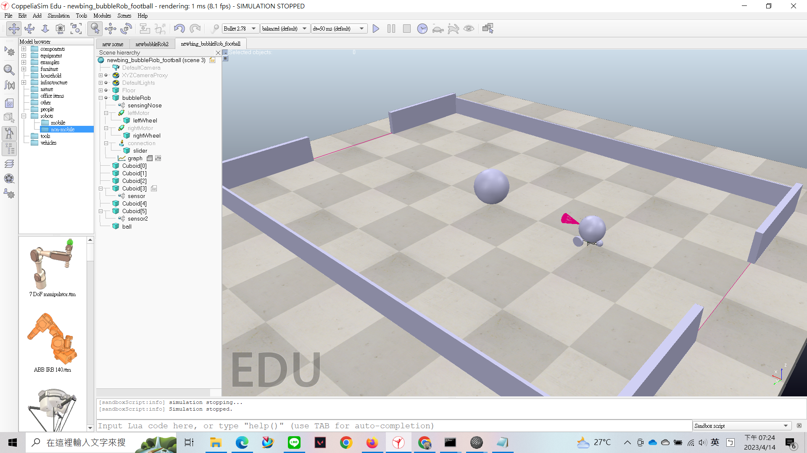
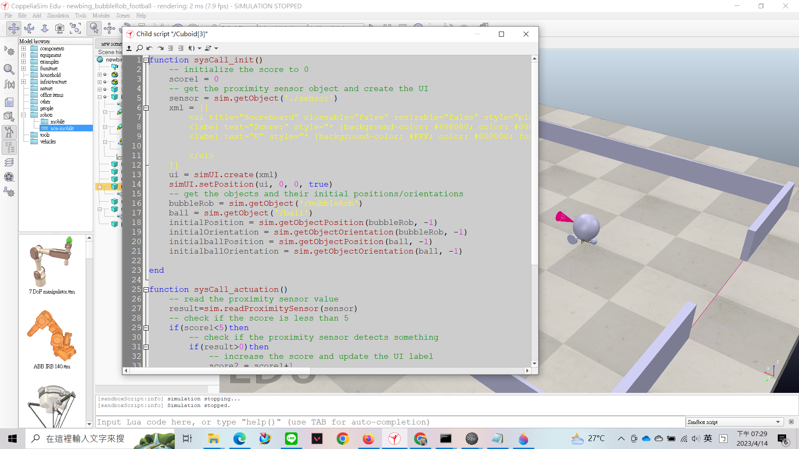
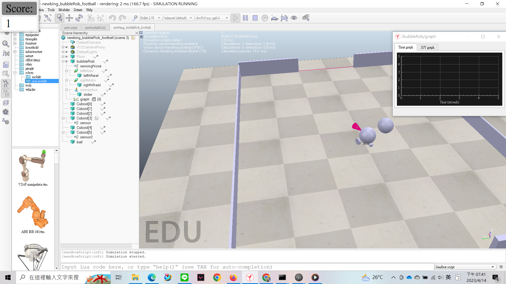
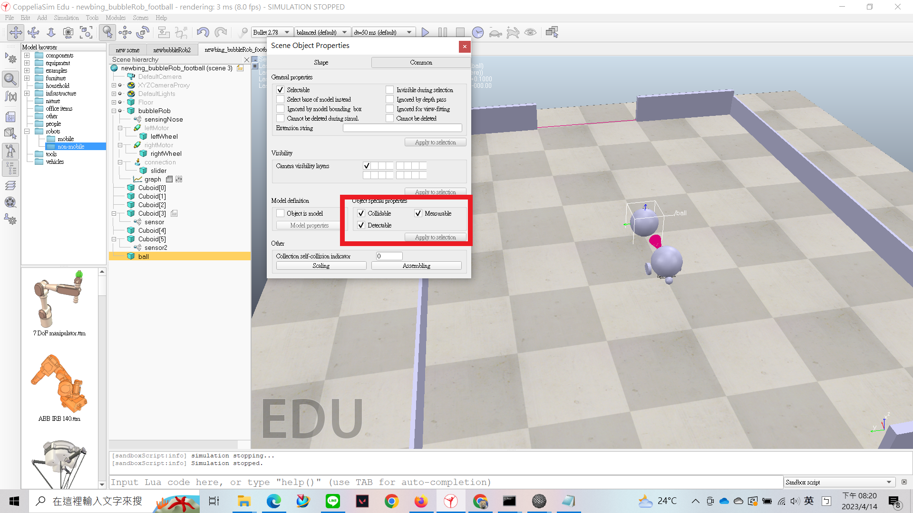
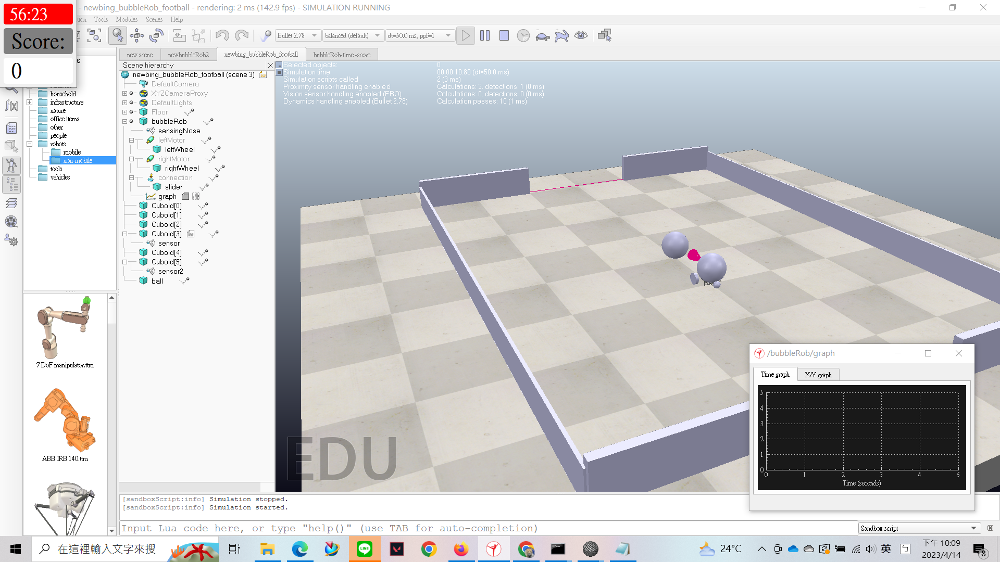

w4 <<
Previous Next >> code comments
w5
3/30 已完成場地及感測器

4/14 完成記分板程式

4/14 可進行計分
觸碰到感測器球及機器人會重置到原本的位置
在錄影時記分板不會顯示出來-附上圖片

當分數為5分時，會暫停模擬
在製作感測器時求記得把 collidable、measurable、detectable 這三個選項打開

另外要注意的是感測器 z軸的部分不能為0，否則感測器會直接偵測到地板導致程式暫停模擬
可以將倒數計時器顯示出來，但計時器所減少的時間會比正常時間快好幾倍

bubbleRob_football 檔案 : bubbleRob_football_pj1ag10
加入連線對戰 bubbleRob_football 檔案 : bubbleRob_football-2_pj1ag10
所有檔案壓縮檔：bubbleRob football 2a-pj1ag10.7z
bubbleRob_football 檔案 :/downloads/newbing_bubbleRob_football-1.ttt
場地及感測器
 - SIMULATION STOPPED 2023_4_15 上午 12_33_30.jpg)
w4 <<
Previous Next >> code comments